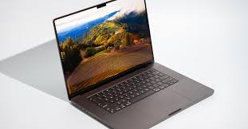

Laptop

A laptop, a portable computer, has revolutionized the way we work, communicate, and entertain ourselves. Unlike desktop computers, laptops offer the flexibility to be used anywhere, thanks to their lightweight and compact design.
This portability has made them an essential tool for students, professionals, and travelers alike.
The development of laptops has seen significant advancements over the years, with improvements in processing power, battery life, and connectivity.
One of the most notable features of a laptop is its ability to function without being tethered to a power source.
Early laptops had limited battery life, but modern models can often last an entire workday on a single charge.
This extended battery life is made possible through the use of more efficient processors, improved battery technology, and power management software.
As a result, users can work, study, or play without constantly worrying about finding an outlet.
In terms of performance, laptops have come a long way. Modern laptops are equipped with powerful processors from companies like Intel and AMD, capable of handling demanding tasks such as video editing, 3D rendering, and gaming.
Additionally, the incorporation of solid-state drives (SSDs) has significantly increased data access speeds, making laptops more responsive and efficient.
High-resolution displays, often featuring touchscreen capabilities, enhance the user experience by providing crisp and clear visuals.